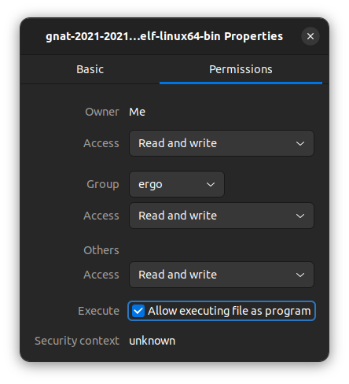

Here are some of the resources that will help you get through COSC 3319. These are all resources that I personally found to be helpful, and I hope that they are of good use to you.
That being said, the resources shared on this page are for Ada and GNAT Studio. The resources provided by Dr. Burris are sufficient for learning and test material. However, you will be provided with code written in Ada in Blackboard. Also, I would recommend doing all of his labs in Ada. Otherwise, he is likely to take off points for the "Implementation Fee"
Helpful Resources:
First and foremost, if you are using an operating system other than Windows, you are likely to have a harder time installing GNAT. If you happen to be using an non-Windows OS, consider using the free VMWare subscription offered to students at SHSU to make a virtual machine with Windows installed. I apologize if I miss any information necessary for linux and MAC users, I just found the best things I could find online and linked them below.
Here is how to navigate the page:
In order for you to be able to compile any of the code written in GNAT Studio, make sure that you have GCC, GNU Compiler Collection, installed. You can check for this by opening a terminal or command prompt and enterin gthe following command: gcc -v. If it is installed, you will be presented with the version of gcc that you have installed, otherwise, there will be an error message of some sort.
To install gcc on linux, open a terminal and enter the command: sudo apt install gcc
Here is a tutorial to set up GNAT Studio: https://docslib.org/doc/6777556/installing-gnat-in-linux-and-unix
For linux users, you may also need to change the permissions on the file you download:
To install gcc and GNAT on MAC, it is not so simple. There are helpful tutorials available on Youtube. As far as I know, it is pretty difficult. Here is a helpful tutorial: https://sites.radford.edu/~nokie/classes/320/compileInstall.html
Installing GNAT on windows is somewhat similar, so once you download the correct file, run it and follow the prompts accordingly
Here is a helpful video from Adacore showing the installation process of the GNAT studio on windows: https://www.youtube.com/watch?v=oMQn_M-9Kmw
Once you reach this point, all that is left to do is make a project. Once you open the new software you just installed, do the following:
Click on 'Create new project'
Click on 'Simple Ada Project'
Find a place to store your project
Change both 'Project Name' and 'Main Name' to something meaningful
Here is some dummy code that will calculate the weight of n-number of crates(each one weighs kgs)
There is nothing advanced happening here, but the point is to demonstrate some of the syntax used in Ada
To make a package, right-click on the 'src' folder, navigate to 'New', and then click on 'Ada Package'
Give the package you make a decent name
Note that in the .ads file, you only need to specify the functions or procedures to be utilized.
This is similar to using interfaces in Java, where the .ads file is analagous to the interface(skeleton code), and the .adb is analogous to the implementation of the skeleton
And that is how to make a package, and use it in your program.
General Tips